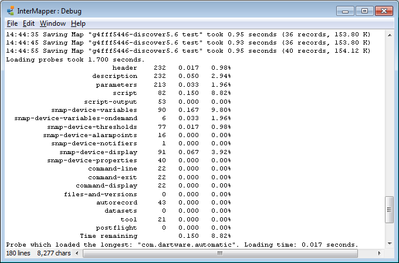
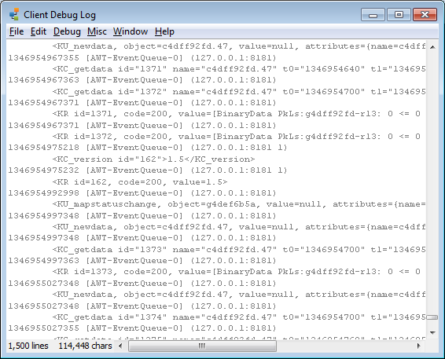

InterMapper maintains two debug logs:
The Server Debug Log contains details of the InterMapper Server's operations that can be valuable for troubleshooting various configuration problems. It stores messages generated by the server.

Some examples of information that is stored:
To open the Debug Log window:
The Client Log Window shows the contents of the Client Log.

To open the Client Debug window:
| Macintosh: | Command + Option + |
| Windows: |
Control + Alt + Shift + Z |
The Client Debug Log window opens, and Debug and
In general, Help/Systems does not document the information shown in the Client Debug Log window, because its messages will change from version to version.
Note: Opening the Client Debug Log window creates two new menus. Certain of the items in these menus are designed to test InterMapper's crash recovery facilities. Certain others may exercise portions of the program that may crash.